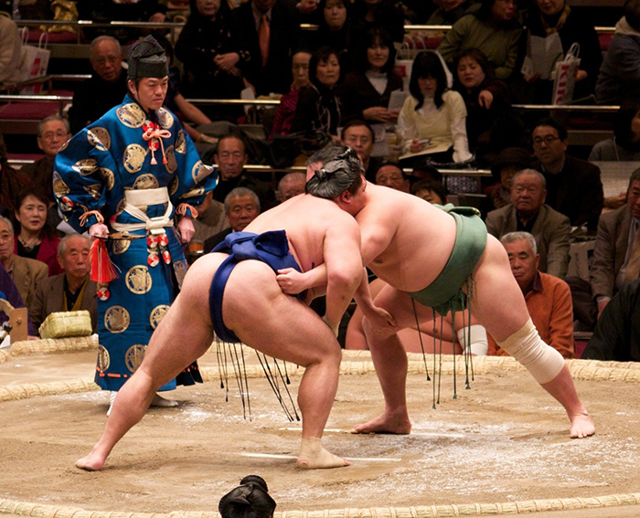
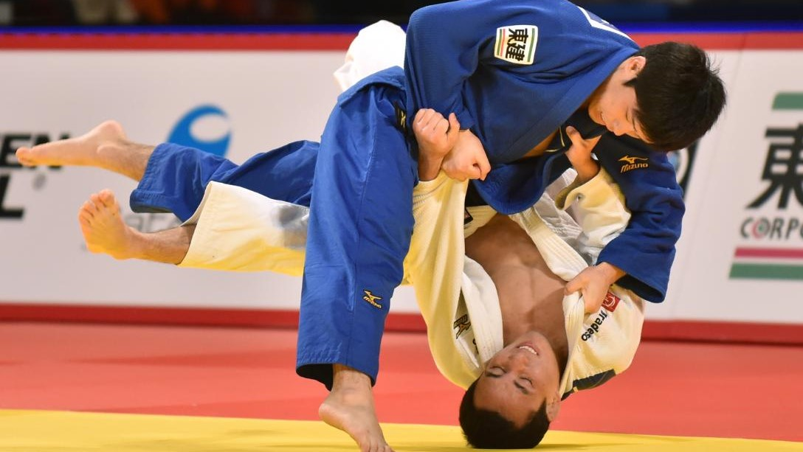
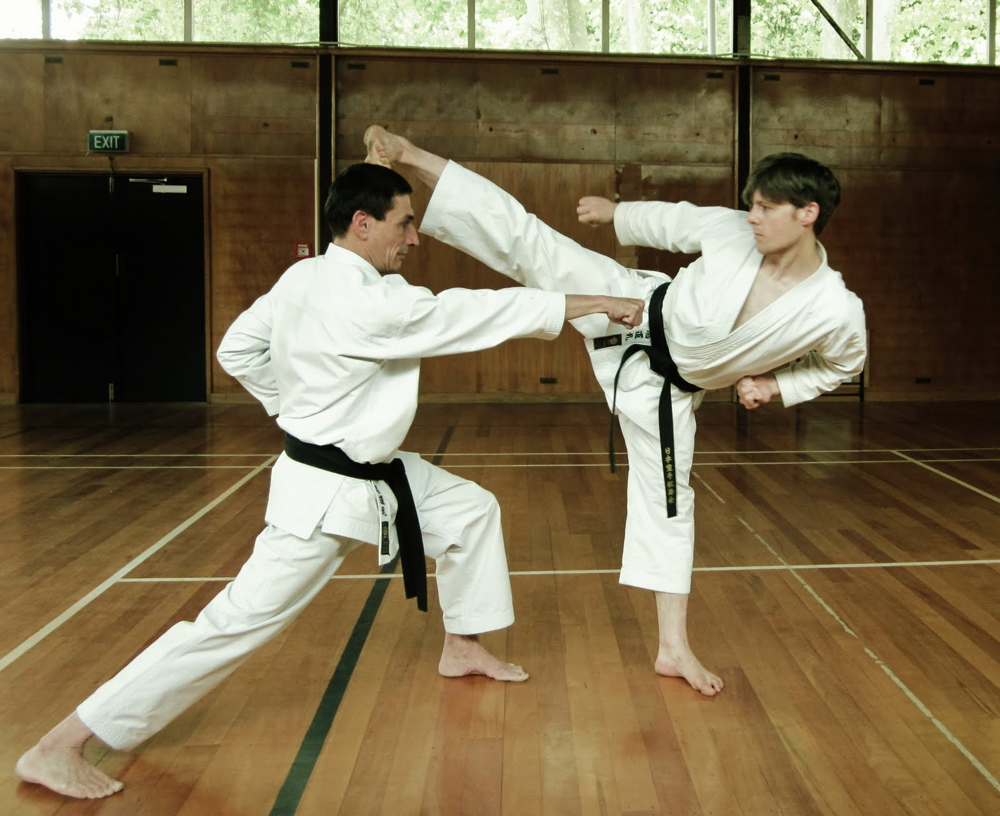
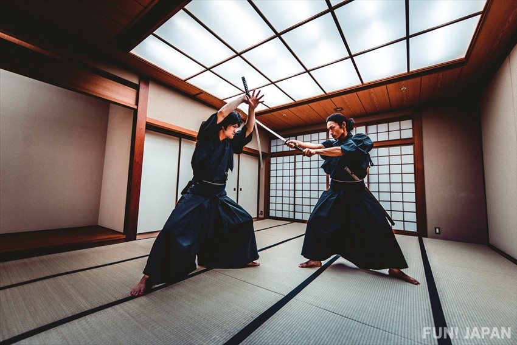
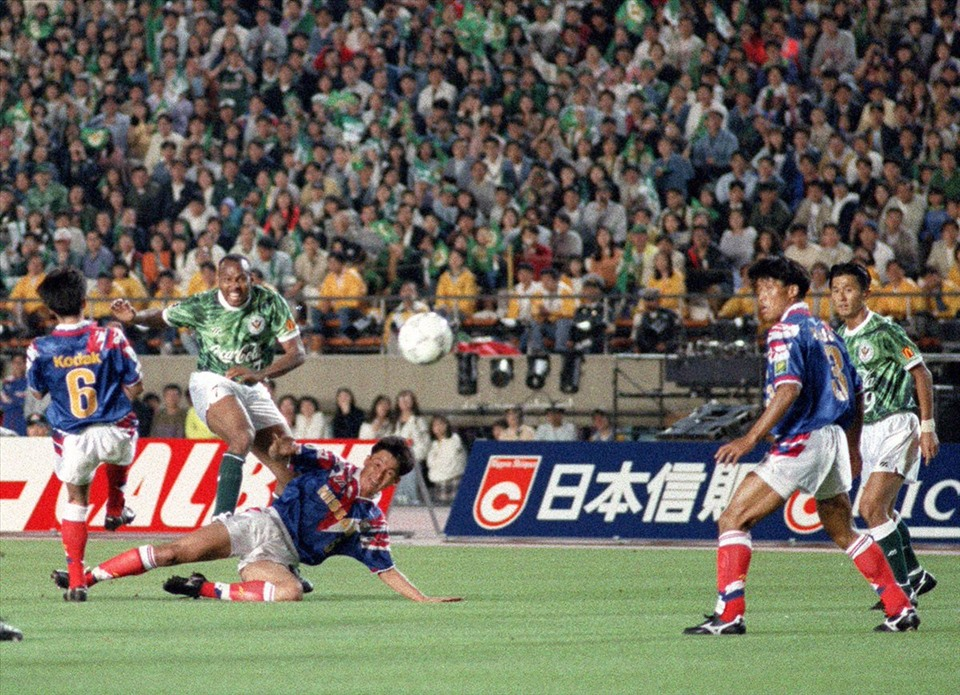
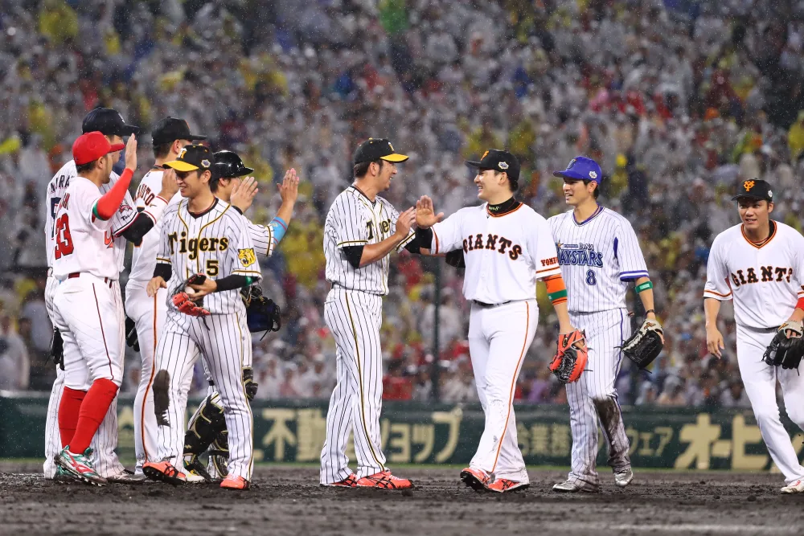
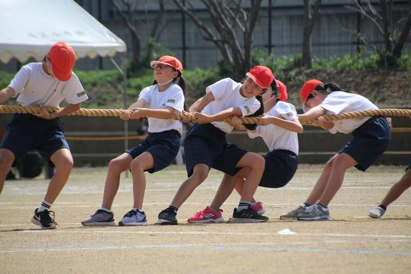

Thể thao Nhật Bản – Kỷ luật, đam mê và khát vọng

Nhật Bản là quốc gia có nền thể thao phát triển mạnh mẽ, nơi những môn võ truyền thống tồn tại song song với các giải đấu hiện đại. Đằng sau những thành tích ấn tượng của các vận động viên Nhật Bản là một nền văn hóa đề cao kỷ luật, sự kiên trì và tinh thần không ngừng hoàn thiện bản thân.
1. Nền văn hóa thể thao đặc biệt
Thể thao đóng vai trò quan trọng trong đời sống xã hội Nhật Bản. Từ trường học, cộng đồng địa phương đến các giải đấu chuyên nghiệp, hoạt động thể thao được xem là một phần của quá trình giáo dục và phát triển con người.
Điều khiến thể thao Nhật Bản trở nên đặc biệt chính là sự kết hợp giữa những giá trị truyền thống và phương pháp huấn luyện hiện đại. Các môn võ như sumo, judo, karate và kendo không chỉ được xem là những hoạt động thể chất mà còn mang ý nghĩa giáo dục về đạo đức, sự tôn trọng và khả năng kiểm soát bản thân. Trong khi đó, những môn thể thao hiện đại như bóng đá, bóng chày, bóng chuyền và bóng rổ ngày càng thu hút sự quan tâm của giới trẻ.
2. Sumo – Biểu tượng của thể thao truyền thống
Sumo là một trong những môn thể thao truyền thống nổi tiếng nhất của Nhật Bản. Môn thể thao này có lịch sử lâu đời và gắn liền với nhiều nghi thức mang ý nghĩa văn hóa và tâm linh.
Một trận đấu sumo diễn ra trong một võ đài hình tròn gọi là dohyo. Hai đô vật tìm cách đẩy đối thủ ra khỏi võ đài hoặc khiến đối thủ chạm mặt sàn bằng một bộ phận cơ thể khác ngoài lòng bàn chân. Tuy nhiên, sumo không chỉ đơn thuần là cuộc thi về sức mạnh thể chất.
Các đô vật phải tuân thủ những quy tắc nghiêm ngặt, tham gia quá trình huấn luyện chuyên nghiệp và thực hiện nhiều nghi thức truyền thống trước mỗi trận đấu. Những nghi thức này thể hiện sự tôn trọng đối thủ, tinh thần thi đấu và sự kết nối với lịch sử của môn thể thao. Các giải đấu sumo chuyên nghiệp được tổ chức định kỳ trong năm, thu hút đông đảo người hâm mộ và du khách quốc tế.
3. Judo, Karate và Kendo – Tinh thần Nhật Bản
Judo – Sức mạnh của kỹ thuật và sự linh hoạt

Judo là môn võ được sáng lập tại Nhật Bản vào cuối thế kỷ XIX bởi Jigoro Kano. Khác với những môn võ tập trung chủ yếu vào sức mạnh, judo đề cao việc sử dụng kỹ thuật, khả năng giữ thăng bằng và tận dụng chuyển động của đối phương. Judo đã trở thành một môn thể thao Olympic và được phổ biến rộng rãi trên toàn thế giới. Ngoài giá trị thi đấu, judo còn được sử dụng trong giáo dục thể chất nhằm phát triển sự tự tin, tính kỷ luật và khả năng kiểm soát bản thân.
Karate – Nghệ thuật của sự tập trung

Karate có nguồn gốc từ Okinawa và phát triển thành một trong những môn võ nổi tiếng nhất của Nhật Bản. Môn võ này bao gồm nhiều kỹ thuật như đấm, đá, phòng thủ và các bài quyền. Karate đề cao sự tập trung, độ chính xác và khả năng kiểm soát chuyển động. Người tập không chỉ học cách cải thiện kỹ năng thể chất mà còn rèn luyện sự kiên nhẫn và tinh thần tôn trọng.
Kendo – Tinh thần kiếm đạo

Kendo là môn võ sử dụng kiếm tre và trang bị bảo hộ, được phát triển từ truyền thống kiếm thuật của các samurai. Môn võ này không chỉ tập trung vào kỹ thuật mà còn đề cao tinh thần, sự tập trung và thái độ của người luyện tập. Việc cúi chào trước và sau khi luyện tập thể hiện sự tôn trọng đối với đối thủ, người hướng dẫn và môn võ.
4. Bóng đá Nhật Bản – Hành trình vươn tầm quốc tế

Trong những thập kỷ gần đây, bóng đá Nhật Bản đã có những bước phát triển đáng kể. Sự ra đời của J.League vào năm 1993 đánh dấu một giai đoạn quan trọng trong quá trình chuyên nghiệp hóa bóng đá tại Nhật Bản. Giải đấu đã góp phần nâng cao chất lượng chuyên môn, phát triển hệ thống câu lạc bộ và tạo điều kiện cho các cầu thủ trẻ tiếp cận môi trường thi đấu chuyên nghiệp.
Một trong những yếu tố quan trọng giúp bóng đá Nhật Bản phát triển là hệ thống đào tạo trẻ. Các câu lạc bộ và trường học chú trọng xây dựng nền tảng kỹ thuật, tư duy chiến thuật và tinh thần đồng đội cho cầu thủ từ sớm. Đội tuyển quốc gia Nhật Bản, thường được biết đến với biệt danh Samurai Blue, đã nhiều lần tham dự FIFA World Cup và trở thành một trong những đội tuyển mạnh của châu Á.
5. Bóng chày – Môn thể thao được yêu thích

Bóng chày là một trong những môn thể thao phổ biến nhất tại Nhật Bản. Môn thể thao này có lịch sử phát triển lâu đời và được yêu thích bởi nhiều thế hệ người hâm mộ. Giải bóng chày chuyên nghiệp Nhật Bản (NPB) thu hút lượng lớn khán giả đến sân vận động và theo dõi các trận đấu qua truyền hình.
Một trong những sự kiện thể thao nổi bật là giải bóng chày trung học toàn quốc tại sân Koshien. Đây là giải đấu có ý nghĩa đặc biệt đối với các học sinh và cộng đồng người hâm mộ. Những trận đấu tại sân vận động thường mang đến bầu không khí sôi động với các bài hát cổ vũ, tiếng trống và sự nhiệt tình của khán giả.
6. Thể thao học đường – Nền tảng của sự phát triển

Một trong những yếu tố quan trọng tạo nên thành công của thể thao Nhật Bản là hệ thống thể thao học đường. Tại nhiều trường học, học sinh có thể tham gia các câu lạc bộ thể thao như bóng đá, bóng chày, bóng chuyền, điền kinh và nhiều môn khác.
Các hoạt động này giúp học sinh phát triển thể chất, xây dựng tinh thần đồng đội và học cách quản lý thời gian. Thông qua việc luyện tập và thi đấu, học sinh có cơ hội học hỏi những giá trị như sự kiên trì, trách nhiệm và tinh thần tôn trọng người khác. Các giải đấu học đường cũng đóng vai trò quan trọng trong việc phát hiện và phát triển những tài năng thể thao trẻ.
7. Tinh thần thể thao – Bài học ngoài sân đấu
- Kỷ luật và kiên trì: vận động viên trải qua quá trình luyện tập dài hạn để cải thiện kỹ năng và đạt mục tiêu.
- Tôn trọng đối thủ: cúi chào trước và sau trận đấu nhắc rằng thái độ thi đấu quan trọng không kém chiến thắng.
- Tinh thần đồng đội: thành công là kết quả của sự đóng góp chung, không chỉ phụ thuộc vào một cá nhân nổi bật.
Những giá trị này không chỉ hữu ích trong thể thao mà còn có thể được áp dụng trong học tập, công việc và cuộc sống hằng ngày.
8. Kết luận – Truyền thống và khát vọng
Thể thao Nhật Bản là một minh chứng cho cách một quốc gia có thể phát triển nền thể thao hiện đại mà vẫn gìn giữ những giá trị truyền thống. Từ sumo và các môn võ cổ truyền đến bóng đá, bóng chày và những giải đấu quốc tế, thể thao Nhật Bản luôn thể hiện tinh thần kỷ luật, sự nỗ lực và lòng tôn trọng.
Thể thao không chỉ giúp con người trở nên mạnh mẽ hơn về thể chất, mà còn dạy chúng ta cách kiên trì, tôn trọng người khác và không ngừng hoàn thiện bản thân. Đó chính là tinh thần thể thao Nhật Bản.